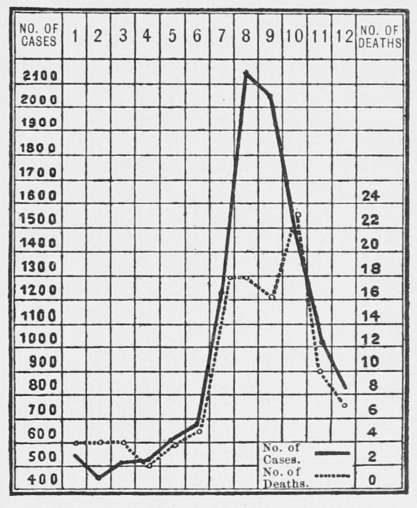

Etiology
Description
This section is from the book "Malaria, Influenza And Dengue", by Julius Mennaberg and O. Leichtenstern. Also available from Amazon: Malaria, influenza and dengue.
Etiology
Our knowledge of the etiology of malaria has been enriched to such an extent in the last ten years that we may consider the disease among those the etiology of which is best known.
Among the etiologic factors there are three, the exposition of which is almost complete. The first relates to the telluric and climatic conditions necessary for the existence of malaria ; the second, to the parasitology of the blood and internal organs; the third etiologic factor, its transmission by particular species of mosquitos, has been elucidated only within the last few years. This subject is discussed in an appendix to this article. (See p. 115.) climatic and telluric requisites.
The relations coming into consideration under this head are so manifest that they were partially recognized, even by the oldest observers. That the ancients came to speculative conclusions that have only recently been verified by the microscope is well known, and Terence is correct when he says, "Nihil dictum quod non dictum prius." Varro writes: "Advertenclum etiam si qua erunt loca pal ustria, et propter easdem causas, et quod arescunt, crescunt animalia quaedam minuta, quae non possunt oculi consequi, et per aera intus in corpora per os ac nares perveniunt, atque efficunt difficiles mor bos." We have similar intimations from Columella, Palladius, Vit ruvius. Richarclus Morton expressed the same, many centuries afterward, only more precisely and correctly, when he wrote*: " Aer item externus, prsesertim palustris vel autumnalis inspiratus, et cum spiritibus commixtus, particulis heterogeneis et venenatis ita non nunquam refertus est, ut febres intermittentes non alia de causa in locis palustribus, et oris maritimis endemise fiant, atque, autumnali tempore, fere ubique epidemiceae evadant." Soon after came Lan cisius, with his investigation of the noxious emanations of swamps. His magnificent work is practically the first detailed attempt to determine the etiology of malaria . He speaks decidedly for the view that the injurious agents arise in swamps. He quotes, among others, a letter of the Wiirtemberg court physician, Rosinus Lentilius, on a severe epidemic of malaria in Stuttgart which ceased at once after a marsh situated in the city had been drained and laid out in gardens (Cap. iii).
* " Pvretoloeia," Exercitat 1, Cap. iii.
In later times very many writers have associated the meteoro logic and geologic conditions of malarial places with the development of the disease, and are almost unanimous in asserting an intimate connection between these conditions and the disease.
Among the climatic factors may be mentioned, first, warmth, moisture, and wind; among the telluric, the geologic formation of the soil, the amount of organic matter it contains, the conformation of the ground, and its elevation.
Heat
The influence of heat on the origin of malaria is evident from the distribution of the disease on the earth's surface. Proceeding from the poles to the equator, the higher becomes the average temperature, and the more numerous and severe the foci of malaria. We have previously mentioned that, according to Hirsch, the isotherm between 15° and 16° C. marks the boundary for the occurrence of malaria; places, therefore, with a lower average summer temperature are spared the disease.
A second fact, indicating the important role of heat, lies in the distribution of malaria over the different seasons. Here we find that the acme of epidemicity always falls in the warm half of the year. This applies, with certain modifications, to all places. In the slightly infected malarial regions the maximum of cases occurs in spring and autumn, a remission is seen in summer, and the minimum occurs in winter. In warmer countries, as Italy, southern France, Greece, southern Hungary, Algeria, etc., as well as in tropical and subtropical countries, the maximum falls in the months of July, August, and September. (See Fig. 1.) Yet the less the variations in temperature and humidity, the more these relations are obliterated. Therefore we do not always see the sharp curves of Fig. 1, which illustrates the conditions in Algiers, because there are constant fluctuations of increase and decrease in the spread of an epidemic. In Senegal the number of cases during and immediately after the rainy season (July to September) increases enormously. In Guiana and in the Antilles the distribution is, corresponding to the climate, more regular, yet even here most of the cases occur in the second half of the year, especially the third quarter, in conformity with the elevated temperature and increased rain.
Fig. 1.-Morbidity and mortality of malaria in the French army in the year 1890 (after Laveran).
The following statistics of admissions to the Hospital San Spirito, in Rome, of which the great majority are malarial patients, illustrates also what has been said:
Years. | ||||||
Months. | 1864 | 1865 | ||||
1873 | 1874 | 1877 | 1878 | |||
January | 284 | 195 | 853 | 595 | 638 | 661 |
February | 228 | 198 | 681 | 528 | 519 | 543 |
March | 189 | 170 | 711 | 747 | 544 | 502 |
April | 168 | 151 | 653 | 675 | 564 | 576 |
May | 112 | 114 | 669 | 584 | 480 | 504 |
June | 83 | 88 | 409 | 331 | 339 | 375 |
July | 439 | 340 | 1130 | 865 | 1858 | 398 |
August | 1492 | 570 | 2824 | 2647 | 2373 | 1604 |
September | 1056 | 476 | 2185 | 2019 | 1995 | 1896 |
October | 775 | 437 | 1761 | 1732 | 1460 | 1495 |
November | 431 | 275 | 1280 | 1186 | 795 | 1245 |
December | 271 | 205 | 777 | 773 | 695 | 1193 |
5528 | 3219 | 13933 | 12682 | 12265 | 10992 | |
It is important to realize that not merely the number of malarial cases, but also their severity, increases with a rise in the temperature. In temperate climates we find in spring the mild intermittent (viz., tertian); with July the severe forms begin to appear, and reach their acme in the months of August and September. The Italians, therefore, very practically classify them as vernal and estivoautumnal fevers. In winter the relapses occur. Many writers state that they have observed quartan fever principally in autumn and winter. It would be very interesting to discover if these were relapses from the spring or fresh cases. Four cases of pure quartan which I observed began as follows: September 26, the beginning of September, August 25, and the end of July. It seems to me, therefore, that quartan infection is to be collocated not with the spring, but with the late summer, fevers.
A complete picture of the distribution of malaria in the different seasons was drawn by Lancisi: "Itaque principio sestatis febres ut pluri mum tertianae non malignae corripiunt: adaucto vero sestu, febres continual atque etiam exitiales urgent; longe tamen deteriores evasurae et plane pestilentes circa iEquinoctium autumnale, prsecipue si pluvise, nebulae, rubigines, ventique australes accesserint. Tandem circa hyemale solstitium de pernicie ubique remittunt; sed in chronicas affectiones abe unt: qui enim ab ejusmodi Castrensibus febribus liberantur, fere semper contumacibus viscerum obstructionibus, et quartanis longo dein tempore duraturis divexari solent" (Cap. xi).
Continue to:
Tags
mosquito, malaria, influenza, dengue, symptoms, outbreaks, diseases, hemoglobinuria, infections